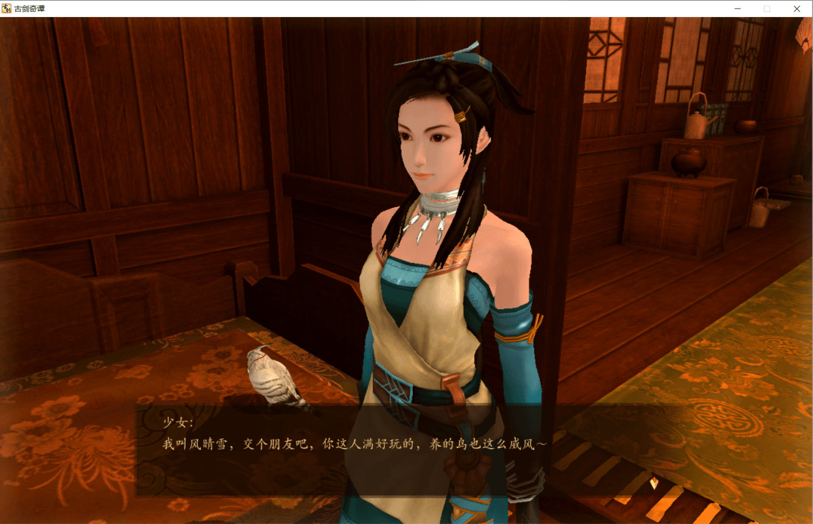

最近疫情严重，steam上国产游戏纷纷打骨折，所以没忍住买了古剑大礼包，123一共不到50块，这两天宅在家打完了古剑1。
貌似是第一次彻底打完并且耐心看完所有剧情的回合制武侠游戏，小时候玩仙剑，感觉重点都在如何通关，而不是欣赏剧情，而且往往玩到一半就半途而废了。这次也是，由于没有刷城镇里的支线任务，所以打到铁柱观的狼魔那里就过不去了，死了N次后怒下了一个修改器，把苏苏的所有数值改成了10倍，从此砍怪如切菜。只可惜这个修改器只能试用三次，之后就要付费，而且我只改了苏苏的数值，到后面雷云幻境里需要兰生一个人打怪的时候就不太行了，只能再找修改器，学了半天cheat engine最后还是下了@小幸姐的修改器，发现这个修改器简直了，不仅可以秒怪，还支持物品、宠物、加速、视野、剧情等等，简直无敌。
不得不说，古一还是很不错的，虽然已经是10年前的游戏了，但是人物立绘现在看也还是很好看，尤其是红玉和晴雪。
配音十分专业，让人有看电视剧的感觉，除了兰生有点吵之外，其他人的声音感觉都很好听，另外感觉少恭说话有点太慢了。慢到忍不住跳台词。
古1的剧情和设定也非常让我着迷，从自己连玩3天通关就可以看出来了= =，意料之外的反转套路，还有仙和妖、神和魔的设定，黑龙和太古长琴的故事，感觉确实很用心，能够让人沉浸在这个宏大的世界观里。不过游戏里感觉有些关卡设置的太肝了，个人感觉一些支线的剧情可以设置得简略一点，比如自贤山庄还有去海底帮鱼人打蛟龙那里，可能因为那里我还没开挂，怪都是一个个打过去的，所以反差有点大。
最后晴雪和苏苏被黑龙带上云端，肝到深夜的我的脸上也不禁浮现出了满足的神情，这一对全程高甜，尤其是在晴雪家乡那里，两个人互换小泥人的时候我也是满脸姨母笑233.
除了主线还通了全部的扩展剧情，有种意犹未尽的感觉，可能这就是好的作品8，最喜欢兰生的剧情，真希望自己将来也能像兰生一样，拥有平静幸福的生活啊。
